cont0
向下滚动
cont1

最新动态
查看全部>
· 屏霸天下！从UC电脑版看未来的浏览器
2014-05-07
· 如何解决eset环境下ucwifi移动设备无法联网？
2014-05-04
· PC之后，UC的故事怎么讲
2014-04-25
· UC浏览器PC版XP系统中浏览器的佼佼者
2014-04-21
· UC优视发布电脑版浏览器 多屏战略布局初成
2014-04-14
· UC发布PC浏览器：以手机为中心打造全新多屏战略
2014-04-10
· 穿越屏幕 超越快感——UC发布首款电脑版浏览器
2014-04-10
· UC浏览器电脑版评测 亮点功能大揭秘
2014-04-09
· 基于Chrome32内核 UC浏览器电脑版初体验
2014-04-09
· 做手机浏览器的思路做PC浏览器：UC推出PC浏览器
2014-04-09
· 关于UC浏览器电脑版限量公测抢码活动的说明
2014-04-04
· UC浏览器电脑版公测 做好准备享受快感
2014-04-01
· UC浏览器电脑版4月1日开抢限量公测邀请码
2014-03-31
01/02
首页
视频
最新动态